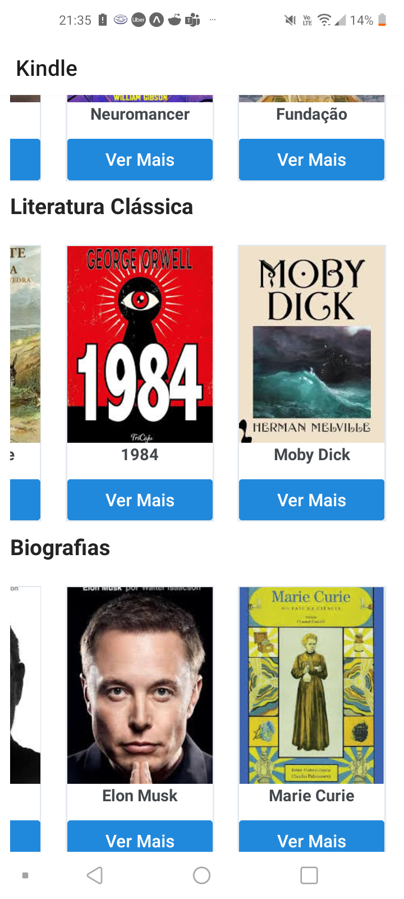
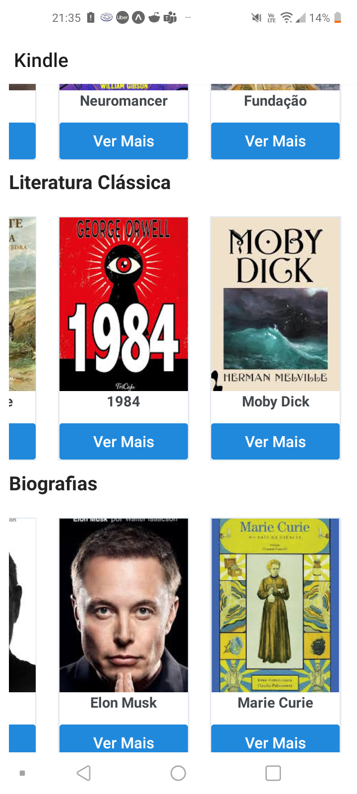

Kindle Clone
Voltar para ProjetosVisão Geral
Este projeto consiste em clonar a página inicial do Kindle utilizando React Native. O objetivo foi praticar a criação de interfaces responsivas e explorar o uso de componentes básicos do React Native.
Screenshots

 

Minha Participação
Design da Interface
- Recriação da página inicial do Kindle
- Uso de componentes básicos do React Native
- Estilização com Flexbox
Desenvolvimento
- Implementação de layout responsivo
- Uso de Snack Expo para testes e compartilhamento
- Exploração de boas práticas de React Native
Tecnologias Utilizadas
React Native
Snack Expo
Flexbox
Detalhes do Projeto
Entregáveis
- Interface funcional da página inicial do Kindle
- Projeto hospedado no Snack Expo
- Layout responsivo e estilizado
Diferenciais
- Simples e direto ao ponto
- Foco em boas práticas de React Native
- Facilidade de compartilhamento e testes no Snack Expo